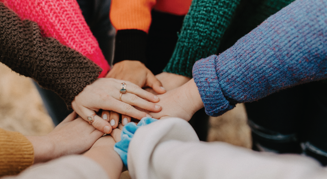

Smrithi’s Story of Finding Strength In Vulnerability from Therapy

Smrithi is a 29-year-old from Delhi. She works in IT and moved to Bangalore for work and new beginnings. Smrithi enjoys reading, movies and listening to music and finds these as her haven. She is a fan of boxing champion Muhamad Ali and has inculcated his quotes into her life. Childhood is indeed the most beautiful stage of a human’s life. It’s where we are bound by values and learn to assimilate bonds as we grow.
However, in Smrithi’s case, things were quite different.
As Smrithi was the elder daughter, she had the additional responsibility of taking care of her younger sisters while her parents worked full-time
“Being the elder daughter, it became normal for me to understand my responsibilities and be independent.”
Smrithi also narrated how growing up was challenging seeing her mom unwell due to a chronic health condition.
“Conversations on mental health and illnesses were never discussed and we all had to be hush-hush about it like most Indian families”
Smrithi never gave in to the situation and always kept hope burning in her heart.
It is with this belief that she decided to move to Bangalore and start life with a new perspective as well as opportunities
"A new place was all I needed as it would help me turn over a new leaf and live life on my own terms”
She also mentioned that losing loved ones during COVID and quarantining with family for a long time was particularly difficult. It was also around this time that her organisation introduced her to YourDOST.
“I’ve always been open about my emotions to my support system. My friends shared their hardships with me, and I shared mine with them.”
Smrithi explains how stories of mental health struggles shared by her friends were very relatable.
“Stories from my friends made me feel that we are all going through similar challenges. It made me believe that we all refused to be victims and we took actions to write our own stories.”
She learnt this growing up in a family where her mother would face each day with a smile.
“Seeing my mom being resilient and strong against every adversity including her own health condition ignited the same spirit in me. She would never give up nor let this ruin her happiness.”
Smrithi was dealing with stress management, imposter syndrome and PTSD. She decided to seek therapy to primarily manage these concerns and pursue personal growth.
Resources have always been the flag bearer of therapy and counselling sessions.
In Smrithi’s story of embracing change, the techniques her counselor advised her with are the Grounding technique, deep breathing, and calming down and she was able to stick to them almost 3-4 times a week.
“Stories from my friends made me feel that we are all going through similar challenges. It made me believe that we all refused to be victims and we took actions to write our own stories.”
Smrithi’s Warrior Tips:
1. Your emotions may feel heavy at the moment but are not always the reality. We create our problems because of how we let our emotions conquer us. It starts by creating awareness of the different types and techniques to deal with it on a larger scale.
2. Therapy helps you manage yourself better with your everyday life, it helps you understand where you spend your energy the most.
#LetsTalk